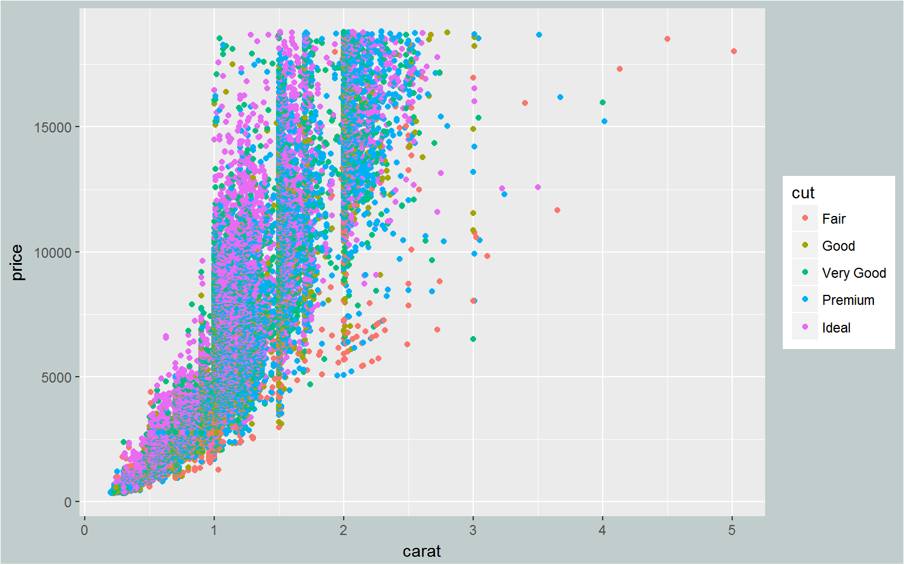
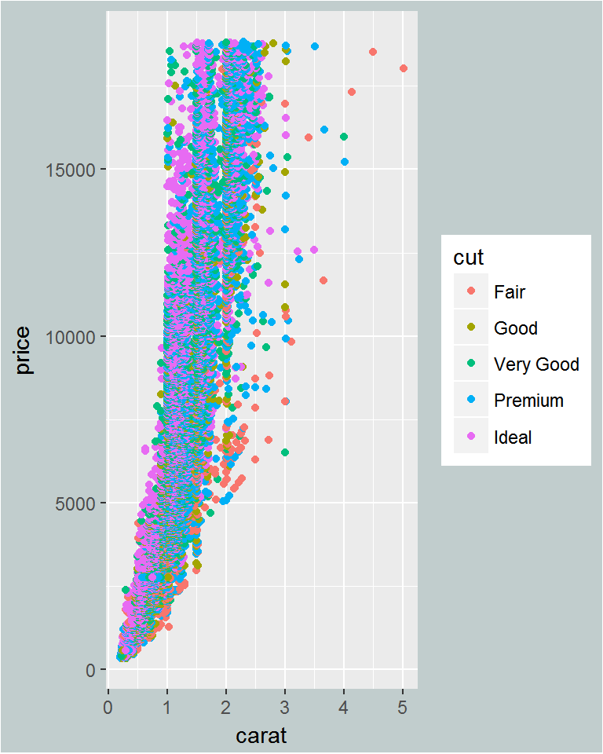
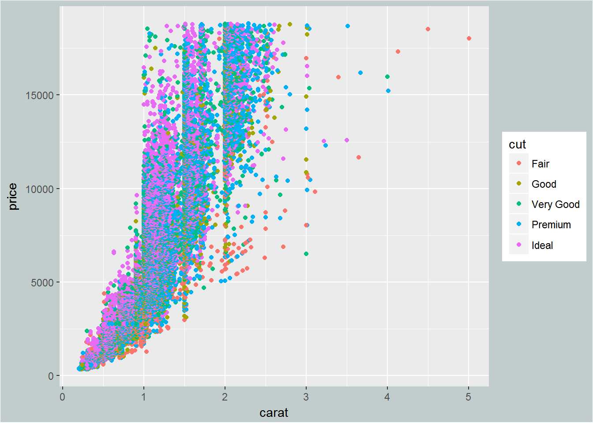
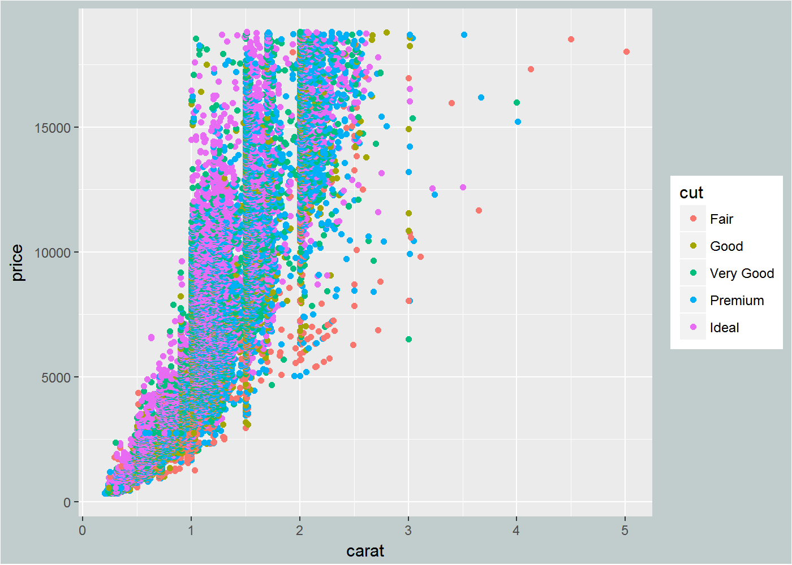
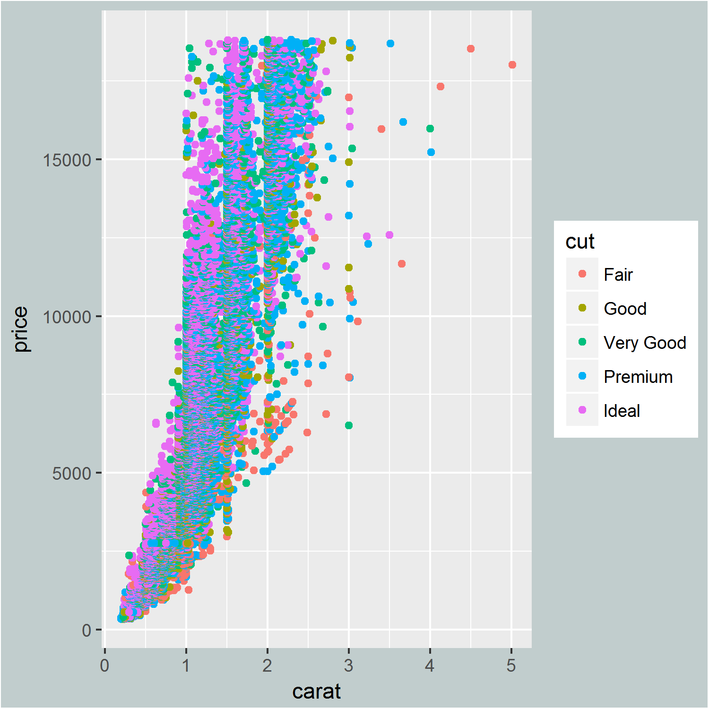
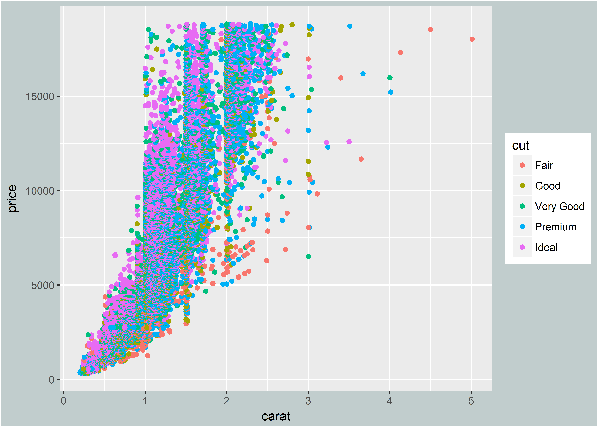
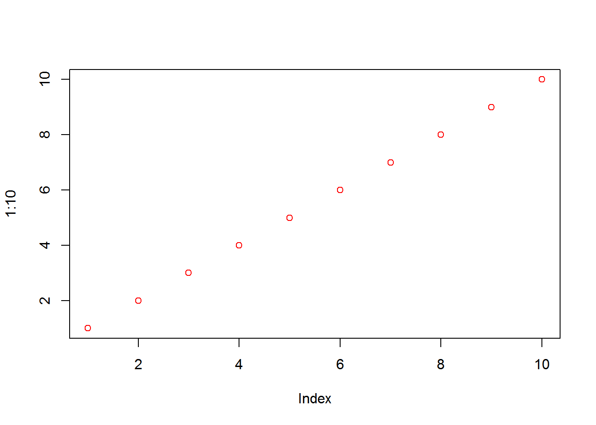
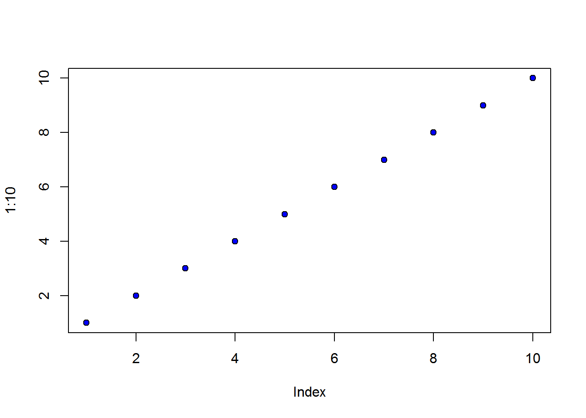
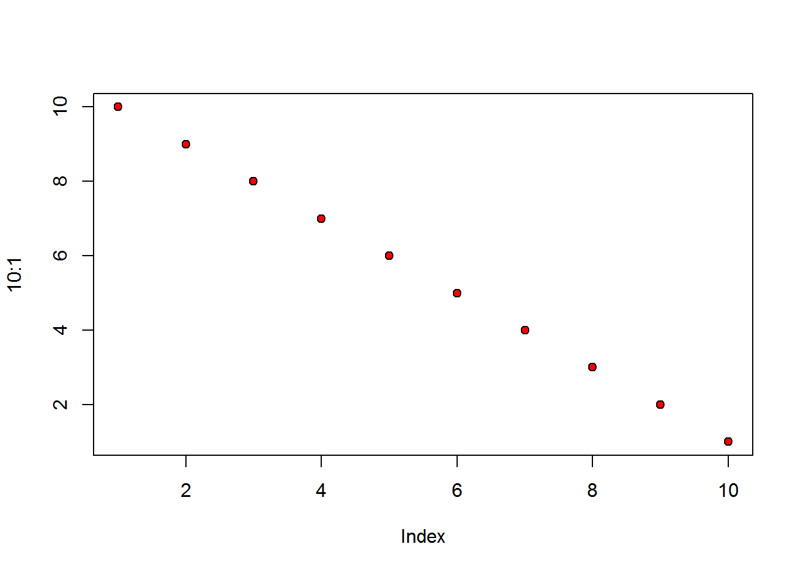
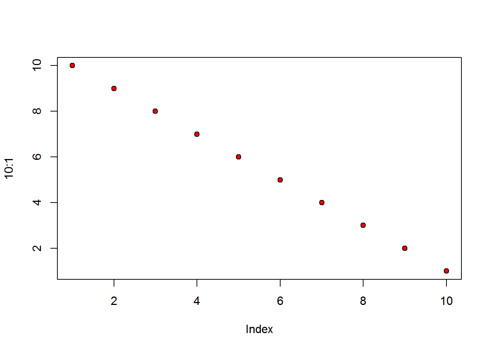

Tips and tricks for sizing images and figures in R Markdown documents
Introduction
I was recently putting together an R Markdown document for a client and found myself fussing around with the images for awhile – both the R-generated images like plots and maps, as well as my own images created outside of R. In an attempt to get all of the images sized and styled similarly, I spent some time searching around for best practices.
This post is an account of what I found. It includes some basic descriptions of terms as well as some simple testing of both R-generated and user-generated graphics. Originally we were going to show several methods for adding user-generated images but ultimately decided to focus on the include_graphics function from the knitr package. The knitr package was written by Yihui Xie of RStudio (thanks Yihui!), and the include_graphics function is new to knitr as of version 1.12. We’re focusing our attention on include_graphics because it provides the most flexibility in terms of its ability to work with all document formats supported by knitr. For example you can use the same syntax regardless of if you’re working with LaTeX or Markdown.
NOTE: We mostly work with HTML documents so did all of our testing with an HTML end product in mind. Some of our conclusions and recommendations may not apply if you’re using R Markdown to create a PDF or Word document.
Load the libraries
We’ll use the following libraries in this post.
library(knitr) # For knitting document and include_graphics function
library(ggplot2) # For plotting
library(png) # For grabbing the dimensions of png filesTake a quick look at the data
In this post we’ll work with 2 images of different sizes and resolutions as well as an R-generated ggplot. Moving forward we’re going to refer to the R-generated plot as figure and our uploaded images as images. Both images were downloaded to our local drive from here and can be used free of copyrights under the Creative Commons CC0.
To start out we want to know the original dimensions of our images. Calculate this using the readPNG function from library(png). There are two ways to grab the dimensions (height and width) of the image.
- Use the
dimfunction: get the dimensions of the image - Use the
attrfunction: get the dimensions of the image as well as some other potentially useful information (color type, dpi, etc).
NOTE: you can use the same process to examine jpegs, simply swap outpngforjpeg. For examplejpeg::readJPEG(img1).
Read in the images and create the figure without setting any width or height requirements
Image 1 has a height of 900px, a width of 1350px and dpi of 300
img1<-"images/sloth1.png"
dim(readPNG(img1))
## [1] 900 1350 3
attr(readPNG(img1, native = TRUE, info = TRUE), 'info')
## $dim
## [1] 1350 900
##
## $bit.depth
## [1] 8
##
## $color.type
## [1] "RGB"
##
## $dpi
## [1] 299.9994 299.9994
include_graphics(img1)
Image 2 has a height of 1050px, a width of 788px and dpi of 72
img2<-"images/sloth2.png"
dim(readPNG(img2))
## [1] 1050 788 3
attr(readPNG(img2, native = TRUE, info = TRUE), 'info')
## $dim
## [1] 788 1050
##
## $bit.depth
## [1] 8
##
## $color.type
## [1] "RGB"
##
## $dpi
## [1] 72.009 72.009
include_graphics(img2)Create a simple ggplot
g<-ggplot(diamonds, aes(x=carat, y=price, color=cut)) + geom_point() +
theme(plot.background = element_rect(fill="azure3"))
g
Default settings for images and figures
Defaults for the images
Some of you may have noticed that the first image, which has an original width of 1350px, doesn’t really look like it’s 1350px wide. I checked the actual width of the image in my HTML file and it’s 675px wide or half of its original size. Same rule applies to the second image (original width is 788px, actual width is 394px). So what gives?
As it turns out the default width setting when using the include_graphics function is to multiply the given width by 50%. That code looks something like this. Also for those of you working with PDF graphics, note that the default width is 300px.
assert(
'include_graphics() includes custom images correctly',
identical(img_output('a.png'), ''),
identical(img_output(c('a.png', 'b.png'), list(fig.show = 'hold')), ''),
identical(img_output('a.png', list(fig.cap = 'foo bar')), ''),
identical(img_output('a.png', list(out.width = '50%')), '<img src="a.png" width="50%" />'),
identical(img_output('a.pdf', list(out.width = '300px')), '<embed src="a.pdf" width="300px" type="application/pdf" />')
)Defaults for the figure
What about the figure? Width defaults for R-generated figures are 7 inches. To convert that into pixels we calculate 7in x 96dpi = 672px. Great! This is the width we’re seeing in our HTML file.
Sizing images and figures using the width arguments
A common issue we have is the need to make all of our graphics the same width or height within our document. There are two options for sizing the width (and height) so first things first, let’s start with some vocabulary.
What’s the difference between fig.width and out.width?
fig.widthandfig.heightThe
fig.widthandfig.heightinputs are the width and height of the output used in the R graphics device. These numbers are completely unrelated toout.widthandout.height. The inputs must be numeric and are assigned in inches. For examplefig.width=2would apply a width of 2 inches to the image. These arguments can be assigned to your individual R chunk ({r, fig.width=2}) or as a global chunk option (opts_chunk$set(fig.width=2}).out.widthandout.heightThe
out.widthandout.heightinputs specify the width and height of the graphic within the output file. These arguments are written for various software packages (i.e. LaTeX) and as such have more flexibility in terms of unit selection. For example the units of measurement can be percentages (%), pixels (px), etc. These inputs are characters, so for example,out.width="40%"would assign a width of 40% of the total width to the image. And similar to above, these arguments can be assigned to your individual R chunk ({r, out.width="40%"}) or as a global chunk option (opts_chunk$set(out.width="40%"}).
Which width argument should I use (or should I use them both)?
Now that we know what the different height and width arguments mean, when and how should we use them? Let’s run through several examples of applying the width arguments to our image and figure and see what happens. Keep in mind that we’re testing on HTML documents only. You may get different results if you’re working with pdf or word documents for example.
Apply both fig.width and out.width
Apply a fig.width of 8 inches and an out.width of 20%.
# {r, fig.width=8, out.width="20%"}
# Plot the image
# The image in the HTML output is 20% of the
# container's width. The downloaded image is
# it's original height, width and dpi. The
# fig.width setting was not applied.
include_graphics(img1)
# {r, fig.width=8, out.width="20%"}
# Plot the figure
# The figure in the HTML output is 20% of the
# container's width. The downloaded figure has
# a width of 1536px (or 16in), a height of
# 960px (or 10in) and a dpi of 192. Hmmm, why
# is the downloaded figure so much larger than
# our fig.width setting? Keep reading to
# find out.
g
Apply fig.width only
Apply a fig.width of 4 inches to our image and figure.
# {r, fig.width=4}
# Plot the image
# Similar to above the image ignores the
# fig.width setting. The width applied in
# the HTML output is the default width
# (original image width * 50%) and the
# downloaded image is it's original height,
# width and dpi.
include_graphics(img1)
# {r, fig.width=4}
# Plot the figure
# With no out.width applied the width in the
# HTML output assumes a fig.width of 4in
# (4in * 96dpi = 384 px wide). The downloaded
# figure has a width of 768px (or 8in), a height
# of 960px (10in) and dpi of 192. Again, why
# are the dimensions larger than our fig.width
# setting?
g
Apply out.width only
Apply an out.width of 50% to our image and figure.
# {r, out.width="50%"}
# Plot the image
# The image in the HTML output is 50% of the
# container's width. The downloaded image is
# it's original height, width and dpi.
include_graphics(img1)
# {r, out.width="50%"}
# Plot the figure
# The figure in the HTML output is 50% of the
# container's width. The downloaded figure has
# a width of 1344px (or 14in), a height of
# 960px (or 10in) and a dpi of 192. Again, why
# so much bigger? In the next section we will
# discuss an important chunk argument that
# often gets overlooked but will maintain your
# figure width settings.
g
Summary of width arguments
Based on our testing here’s the quick takeaway:
out.widthworks for both images and figures and determines the size of the graphic within the output file, in this case our HTML document.fig.xxxarguments apply only to R-generated figures, not to user-generated images. If you apply afig.xxxargument to an image it will not do anything.If
out.widthis not applied to a figure butfig.widthis, the width of the figure in the document will be itsfig.width.The height, width and dpi of a downloaded image will stay the same regardless of what the
out.widthsetting is. For example if you include an image that is 2000px X 1200px and 300dpi, those dimensions will not change if the image is downloaded. You’ll want to pay attention to how large your original images are before adding them or you could end up with a very large documentThe height, width and dpi of a downloaded figure will be larger than the
fig.widthsetting unless another argument is applied. See the next section for more details.
Using fig.retina for HTML outputs
In the previous section we discovered that the width, height and dpi of our downloaded figures were larger than our fig.width settings. In all cases in fact, the width of the downloaded figure was twice as large as the fig.width setting. So why is that?
As it turns out the default setting of fig.retina for HTML documents is fig.retina = 2. This argument is a dpi multiplier for displaying HTML output on retina screens. Long story short, it will take your fig.width, fig.height and dpi input(s) and multiply them by 2. This can obviously lead to huge figure sizes (and file sizes) if you’re not careful. You may however not even know your figure sizes are huge if you’re also using the out.width setting (the width of the figure within the document). We’ll touch on this concept a little more in the next section when we discuss the dpi arguments. To remove this option set fig.retina = NULL or fig.retina = 1.
Using the dpi arguments
In this section we’ll focus on the dpi or dots per inch argument. In general dpi is a measure of resolution – the higher the dpi, the sharper the image. For those of you that have already worked with include_graphics you probably noticed that the function has a dpi argument. In addition dpi can be used as an R chunk option.
Below we’ll do some testing to see how the different dpi arguments are used with our image and figure. Let’s start by taking a look at one of our images.
Applying dpi to images
Use the include_graphics function to add our image. As I mentioned above there are two places that will accept the dpi argument in this situation. The first example uses the dpi argument within our R chunk, the second uses the dpi argument within the include_graphics function.
Compare the two dpi arguments
Include dpi as an R chunk argument
# {r, dpi=300}
include_graphics(img2)Include dpi as an include_graphics argument
# {r}
include_graphics(img2, dpi=300)Why are our images different sizes when applying the same dpi?
The above examples are applying the same dpi to the same image so why are our images different sizes? When using the include_graphics function it will first look for the dpi argument within the function. If that’s not provided it will use the dpi argument from the R chunk. The formula for calculating the output image size using the dpi argument looks something like this:
round(w/(dpi/96))
Using this formula let’s determine where our different output image sizes are coming from. Remember that our downloaded image size will not change. These arguments do not change the dpi of your actual image, only the image size within the document.
# Calculation 1: we know the original width of the
# image is 788px and we're applying a dpi of 300px.
w <- 788
dpi <- 300
round(w/(dpi/96))
## [1] 252
# As it turns out 252px is the width of the second
# image, the one that uses the dpi argument in the
# include_graphics function. Great! Now let's figure
# out how the width of the first image was calculated.Based on what we now know about the behavior of image sizing, my guess is that the dpi in the first example is being applied to the default width of the image, not the original width. Remember the default width is calculated by multiplying the original width by 50%. Here’s what we get if we plug that into our formula:
# Calculation 2: we know the original width of the
# image is 788px. Multiply that by 50% and use
# the same dpi of 300px.
w <- 788
dpi <- 300
round((w * 0.5)/(dpi/96))
## [1] 126
# Bam! This is exactly right. The first example
# above that uses the dpi argument in the R chunk
# has a width of 126px.Additional notes and summary of images using dpi and the include_graphics function
If you’ve had a look at the documention for include_graphics you may have seen that if you assign dpi=NA within the function, no out.width will be calculated. What does this mean? What happens in fact is the image is added using its original dimensions. On the other hand, if you simply do not add the dpi argument to either the R chunk or the include_graphics function, the out.width will be the default dimensions of the image.
To summarize, when using the include_graphics function there are two places that will accept the dpi argument: 1) the R chunk and 2) the include_graphics function. If the out.width is not set it will be determined by using the equation round(w/(dpi/96)) where:
wis the original width of the image whendpiis used as an argument in theinclude_graphicsfunctionwis the default width of the image whendpiis used as an argument in the R chunk
Also to note:
- If
dpi=NAis assigned as an argument to theinclude_graphicsfunction theout.widthwill be the original size of the image - If no
dpiargument is added to the theinclude_graphicsfunction theout.widthwill be the default size of the image
Applying dpi to figures
How does the dpi argument work when applying it to R-generated figures? Since we’re not using the include_graphics function, there is only one place to add the dpi argument and that’s within the R chunk. Also the formula for calculating the final width when not using include_graphics is a little different. It looks something like this:
fig.width in inches * dpi = final width in pixels
Using this information let’s run through some examples. Also since we care as much about the dimensions of the figures in our document as well as the file sizes, I’ll start to include figure file sizes in these tests. Keep in mind as you create your own HTML documents that R-generated figures are stored in the folder ‘figure-html’ within your project directory. Another way to find out where your figures are being stored is to check the current chunk options: opts_current$get("fig.path")
Apply dpi to figure with no width or height settings
# {r, dpi=100}
# Setting `dpi=100` with no height or width setting
# will output a figure with `width = 700px`. How did
# we get there? Remember our default width for R-generated
# figures is 7 inches. If we plug that width into our
# formula we end up with:
w <- 7
dpi <- 100
w * dpi
## [1] 700
# File size: 55 KB
Apply dpi to figure with fig.width setting
# {r, fig.width=5, dpi=300}
# Increase our `dpi` to 300 and set `fig.width`
# to 5 inches. Plug in our new numbers
w <- 5
dpi <- 300
w * dpi
## [1] 1500
# File size: 221 KB
# When I click on the plot in my browser I can see
# that the width is indeed 1500px but when I look
# at the actual figure dimensions (in this case
# I'm using Photoshop) I can see that the dimensions
# of the figure are a whopping 3000px by 3000px with
# dpi = 600, not to mention the file size is
# 221 KBs. Remember the `fig.retina` argument?
# We'll need to add that in if we want to get
# our figure size under control.Apply dpi to figure with fig.width and fig.retina settings
# {r, fig.width=5, dpi=300, fig.retina=NULL}
# Set our `dpi` to 300, `fig.width` to 5 inches
# and `fig.retina` to NULL. Plug in our new numbers
w <- 5
dpi <- 300
w * dpi
## [1] 1500
# File size: 72 KB
# When I click on the plot in my browser I can
# see that the width is indeed 1500px and when
# I look at the actual figure dimensions they're
# 1500px by 1500px with dpi = 300. Great!
Apply dpi to figure with out.width setting
# {r, out.width="600px", dpi=300}
# Keep the same `dpi` setting, remove `fig.width`
# and set `out.width` to 600px. Keep in mind that
# our formula requires a fig.width input, not
# out.width. Plug in our default fig.width of 7 in.
w <- 7
dpi <- 300
w * dpi
## [1] 2100
# File size: 299 KB
# The output width of the figure is indeed 600px
# but the actual figure dimensions again are HUGE!
# (4200px by 3000px with dpi = 600). Oops, this is
# double what it should be. Looks like we forgot
# to include `fig.retina = NULL`
Apply dpi to figure with out.width and fig.retina settings
# {r, out.width="600px", dpi=300, fig.retina=NULL}
# Same as above except add `fig.retina=NULL`
w <- 7
dpi <- 300
w * dpi
## [1] 2100
# File size: 96 KB
# Much better. The figure in the HTML output is
# 600px wide and the actual figure dimensions
# are 2100px by 1500px with dpi = 300. Perfect!Apply dpi to figure with out.width, fig.width and fig.retina settings
# {r, out.width="50%", dpi=300, fig.width=5, fig.retina=NULL}
# Let's use all of the arguments here
w <- 5
dpi <- 300
w * dpi
## [1] 1500
# File size: 72 KB
# Great! The figure width in our document is 50% of
# the container, the file size is relatively small
# and the figure dimensions are such that a client
# could download the graphic and get a relatively
# high-resolution version of the plot.
Summary of dpi arguments
The dpi arguments can be very useful if, for example, you’re creating an HTML document and you’d like your users to be able to download high-resolution images. It’s hopefully easy to see however how quickly the file size of your HTML document could get out of control. Including 10 images that are 250 KBs each will result in a document that’s > 2.5 MBs. That’s quite large for an HTML file! Many of our documents have more than 20 figures included so well, you can see how overlooking certain settings could result in monstrous file sizes.
To summarize here are our quick takeaways:
If you’re using the
include_graphicsfunction with an image, it will first look for thedpiargument within the function. If that is not provided it will use thedpiargument in the R chunk. The width of the resulting image will be calculated slightly differently depending on whichdpiargument is used.If you’re using the
include_graphicsfunction with an image, using thedpiargument will only control the size of the image in the HTML document, it will not change the dpi of your original image.When using
dpiwith figures the dimensions of the figure are calculated using the equationfig.width in inches * dpi = final width in pixels. For example iffig.width = 8anddpi = 300the final width of your figure will be 2400px with a caveat.Unless you set
fig.retina = NULLorfig.retina = 1the size of your figure file will be double what the input is. Using the example from the previous bullet would result in a figure width of 4800px – which is huge!A useful practice for keeping file sizes in check is to occasionally browse to the ‘figure-html’ folder within your R Markdown project. Here you can quickly see which figures (not images) are too large and make adjustments accordingly.
Bonus functionality
Here we’ll share a few more useful arguments we found while doing our research. The first section pertains again to the include_graphics function, the second section quickly highlights two other methods for adding images to your markdown document (in case include_graphics just isn’t your thing :) and the third section discusses how to add CSS styles to your R chunks. Enjoy!
More functionality from include_graphics
Add multiple images at a time
The path argument in include_graphics will accept a vector of names. If you have a folder of images and want to add all them to your document at the same time simply point to the folder and voila!
myimages<-list.files("images/", pattern = ".png", full.names = TRUE)
include_graphics(myimages)
Load an image from a URL
Super easy – point to an image on the web.
include_graphics("https://upload.wikimedia.org/wikipedia/commons/thumb/2/2e/MC_Drei-Finger-Faultier.jpg/330px-MC_Drei-Finger-Faultier.jpg")
Add R-generated figures using include_graphics
We’ve discussed using the include_graphics function mostly in the context of adding user-generated images. It can however also be used to add R-generated figures. This example was taken directly from this Stack Overflow post. It shows how to generate plots but not include them, then call on them with the include_graphics function. This also uses the “fig.path” and “label” arguments from the R chunk.
# {r label = "generate_figures", fig.show = "hide"}
plot(1:10, col = "green")
plot(1:10, col = "red")include_graphics(sprintf("%sgenerate_figures-2.png", opts_current$get("fig.path")))
Additional methods for adding images
Here are two other methods for adding images to your R Markdown document.
Adding images using Pandoc Markdown
{width=40%}Upside-down sloths are so cute
Adding images using HTML
<img src="images/sloth1.png" alt="Upside-down sloths are so cute", width = "40%">
Assign CSS class to R chunk
Have you ever wanted to include 2 side-by-side figures in your HTML document? Below are two examples of how to accomplish this using CSS styles.
Use out.extra to apply CSS styles
# {r, out.width="50%", out.extra='style="float:left"'}
plot(1:10, pch=21, bg="blue")
plot(10:1, pch=21, bg="red")
And here we use our include_graphics example from above but apply the same height to both images.
# {r, out.extra='style="width: auto; height: 200px;"'}
myimages<-list.files("images/", pattern = ".png", full.names = TRUE)
include_graphics(myimages)
Add CSS class to R chunk to apply styles
Here is another variation of applying a CSS style to an R chunk.
# {r myclass, out.width="50%"}
# This style could be applied either as a separate
# stylesheet or at the top of your R Markdown document
# <style>
# .myclass {float: left;}
# </style>
plot(1:10, pch=21, bg="blue")
plot(10:1, pch=21, bg="red") 

Summary
R Markdown provides an incredible framework for creating reproducible reports using a variety of document formats. We focused this post on HTML documents in particular which are perhaps one of the easier types of documents to style. Nonetheless we covered some useful (but potentially confusing) topics such as sizing images and figures, the different ways in which images and figures respond to arguments and ways to keep your overall file size in check.
Here’s what we consider to be the most important takeaways from this post:
- User-generated images and R-generated figures are handled differently. Not all of the same arguments can be applied to both types.
- The
fig.xxxarguments only apply to R-generated images, not to user-generated images - To keep figure sizes in check we strongly recommend the use of
fig.retina=NULLin your R chunk (but again, this will only work for R-generated figures) - The original file size of an image will never be adjusted BUT you can adjust the size of the image within the output document. If you add a 5MB image to a document you can make it appear much smaller in the report BUT that 5MB image will still be part of your final HTML document. Check your image sizes before adding them.
- Figure sizes are determined using a combination of arguments. We gave examples of how to use
fig.width,fig.retinaanddpi. - If the size of the HTML document matters to you, keep an eye on your figure sizes by checking your ‘figure-html’ folder. This figure path can also be found by checking the current chunk options:
opts_current$get("fig.path"). Looking at the file sizes may help you decide which figures need adjusting.
I think that wraps it up for now. Thanks for reading!